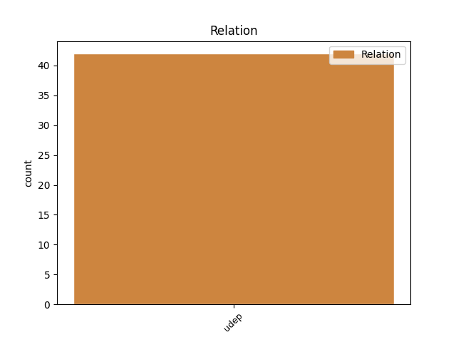
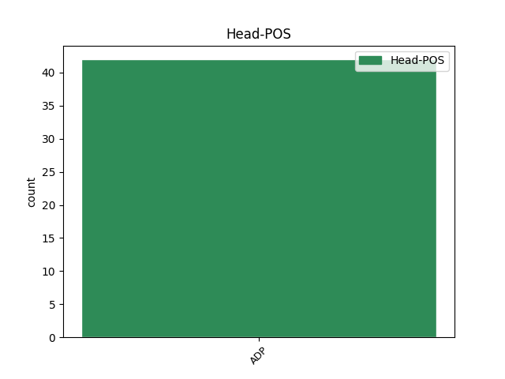
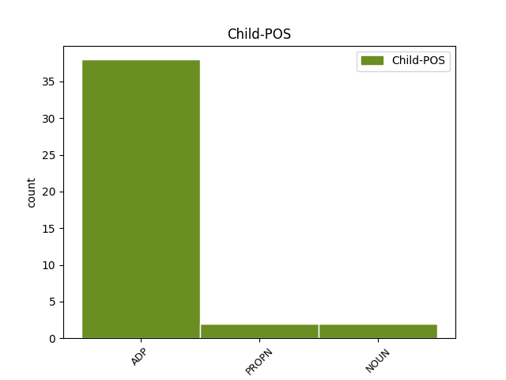

Distribution of features within this leaf



Agreement Rules sorted by frequency.
- When the dependent token is the underspecified dependency(udep) of the head token, and the head token is ADP
1 Copiii _ _ _ _ 0 _ _ _
2 de _ _ _ _ 0 _ _ _
3 suflet _ _ _ _ 0 _ _ _
4 ori _ _ _ _ 0 _ _ _
5 rude _ _ _ _ 0 _ _ _
6 de _ _ _ _ 0 _ _ _
7 vor _ _ _ _ 0 _ _ _
8 fi _ _ _ _ 0 _ _ _
9 ori _ _ _ _ 0 _ _ _
10 streini _ _ _ _ 0 _ _ _
11 moștenesc _ _ _ _ 0 _ _ _
12 pre _ _ _ _ 0 _ _ _
13 părinții _ _ _ _ 0 _ _ _
14 lor _ _ _ _ 0 _ _ _
15 cei _ _ _ _ 0 _ _ _
16 sufletești _ _ _ _ 0 _ _ _
17 , _ _ _ _ 0 _ _ _
18 după după ADP Spca AdpType=Prep|Case=Acc|Compound=Yes 0 _ _ _
19 cum _ _ _ _ 0 _ _ _
20 și _ _ _ _ 0 _ _ _
21 copiii _ _ _ _ 0 _ _ _
22 cei _ _ _ _ 0 _ _ _
23 adevărați _ _ _ _ 0 _ _ _
24 fără fără ADP Spsa AdpType=Prep|Case=Acc 18 udep _ ref=PART_IV_CAP_3b.22.1
25 de _ _ _ _ 0 _ _ _
26 diiată _ _ _ _ 0 _ _ _
27 întocmai _ _ _ _ 0 _ _ _
28 . _ _ _ _ 0 _ _ _
Disagree Examples:
1 Şi _ _ _ _ 0 _ _ _
2 așia _ _ _ _ 0 _ _ _
3 a _ _ _ _ 0 _ _ _
4 să _ _ _ _ 0 _ _ _
5 înderepta _ _ _ _ 0 _ _ _
6 omul _ _ _ _ 0 _ _ _
7 , _ _ _ _ 0 _ _ _
8 numai _ _ _ _ 0 _ _ _
9 den din ADP Spca AdpType=Prep|Case=Acc|Compound=Yes 0 _ _ _
10 mila _ _ _ _ 0 _ _ _
11 lui _ _ _ _ 0 _ _ _
12 Dumnezău Dumnezeu PROPN Npmsrn Case=Acc,Nom|Definite=Ind|Gender=Masc|Number=Sing 9 udep _ ref=PAVEL_PRED.81|SpaceAfter=No
13 , _ _ _ _ 0 _ _ _
14 nu _ _ _ _ 0 _ _ _
15 pentru _ _ _ _ 0 _ _ _
16 destoiniciia _ _ _ _ 0 _ _ _
17 faptelor _ _ _ _ 0 _ _ _
18 , _ _ _ _ 0 _ _ _
19 batîr _ _ _ _ 0 _ _ _
20 că _ _ _ _ 0 _ _ _
21 să _ _ _ _ 0 _ _ _
22 cuvine _ _ _ _ 0 _ _ _
23 să _ _ _ _ 0 _ _ _
24 facem _ _ _ _ 0 _ _ _
25 fapte _ _ _ _ 0 _ _ _
26 bune _ _ _ _ 0 _ _ _
27 , _ _ _ _ 0 _ _ _
28 fără _ _ _ _ 0 _ _ _
29 carele _ _ _ _ 0 _ _ _
30 credința _ _ _ _ 0 _ _ _
31 dereaptă _ _ _ _ 0 _ _ _
32 nu _ _ _ _ 0 _ _ _
33 poate _ _ _ _ 0 _ _ _
34 fi _ _ _ _ 0 _ _ _
35 , _ _ _ _ 0 _ _ _
36 cum _ _ _ _ 0 _ _ _
37 zice _ _ _ _ 0 _ _ _
38 poslaniia _ _ _ _ 0 _ _ _
39 lui _ _ _ _ 0 _ _ _
40 Iacov _ _ _ _ 0 _ _ _
41 . _ _ _ _ 0 _ _ _
1 Hristosu- _ _ _ _ 0 _ _ _
2 i _ _ _ _ 0 _ _ _
3 carele _ _ _ _ 0 _ _ _
4 au _ _ _ _ 0 _ _ _
5 murit _ _ _ _ 0 _ _ _
6 și _ _ _ _ 0 _ _ _
7 carele _ _ _ _ 0 _ _ _
8 au _ _ _ _ 0 _ _ _
9 și _ _ _ _ 0 _ _ _
10 învis _ _ _ _ 0 _ _ _
11 , _ _ _ _ 0 _ _ _
12 carele _ _ _ _ 0 _ _ _
13 e _ _ _ _ 0 _ _ _
14 de- _ _ _ _ 0 _ _ _
15 a a ADP Spsa AdpType=Prep|Case=Acc 0 _ _ _
16 dereapta _ _ _ _ 0 _ _ _
17 lui _ _ _ _ 0 _ _ _
18 Dumnezău Dumnezeu PROPN Npmsrn Case=Acc,Nom|Definite=Ind|Gender=Masc|Number=Sing 15 udep _ ref=PAVEL_ROM.8.34|SpaceAfter=No
19 , _ _ _ _ 0 _ _ _
20 carele _ _ _ _ 0 _ _ _
21 Să _ _ _ _ 0 _ _ _
22 și _ _ _ _ 0 _ _ _
23 milcuiaște _ _ _ _ 0 _ _ _
24 pentru _ _ _ _ 0 _ _ _
25 noi _ _ _ _ 0 _ _ _
26 . _ _ _ _ 0 _ _ _
1 Acel _ _ _ _ 0 _ _ _
2 cuvînt _ _ _ _ 0 _ _ _
3 al _ _ _ _ 0 _ _ _
4 Lui _ _ _ _ 0 _ _ _
5 pentru _ _ _ _ 0 _ _ _
6 propovedaniia _ _ _ _ 0 _ _ _
7 , _ _ _ _ 0 _ _ _
8 care- _ _ _ _ 0 _ _ _
9 au _ _ _ _ 0 _ _ _
10 nădăjduit _ _ _ _ 0 _ _ _
11 pre _ _ _ _ 0 _ _ _
12 mine _ _ _ _ 0 _ _ _
13 , _ _ _ _ 0 _ _ _
14 după după ADP Spca AdpType=Prep|Case=Acc|Compound=Yes 0 _ _ _
15 porunca _ _ _ _ 0 _ _ _
16 Spăsitoriului spăsitor NOUN Ncmsoy Case=Dat,Gen|Definite=Def|Gender=Masc|Number=Sing 14 udep _ ref=PAVEL_TIT_1.3
17 nostru _ _ _ _ 0 _ _ _
18 Dumnezău _ _ _ _ 0 _ _ _
19 , _ _ _ _ 0 _ _ _
20 lui _ _ _ _ 0 _ _ _
21 Tit _ _ _ _ 0 _ _ _
22 , _ _ _ _ 0 _ _ _
23 iubitului _ _ _ _ 0 _ _ _
24 fiiu _ _ _ _ 0 _ _ _
25 , _ _ _ _ 0 _ _ _
26 după _ _ _ _ 0 _ _ _
27 credința _ _ _ _ 0 _ _ _
28 ce _ _ _ _ 0 _ _ _
29 li- _ _ _ _ 0 _ _ _
30 e _ _ _ _ 0 _ _ _
31 depreună _ _ _ _ 0 _ _ _
32 . _ _ _ _ 0 _ _ _
1 Măi _ _ _ _ 0 _ _ _
2 țărane _ _ _ _ 0 _ _ _
3 de _ _ _ _ 0 _ _ _
4 la _ _ _ _ 0 _ _ _
5 țară _ _ _ _ 0 _ _ _
6 , _ _ _ _ 0 _ _ _
7 Cât _ _ _ _ 0 _ _ _
8 trăești _ _ _ _ 0 _ _ _
9 muncești _ _ _ _ 0 _ _ _
10 din _ _ _ _ 0 _ _ _
11 greu _ _ _ _ 0 _ _ _
12 , _ _ _ _ 0 _ _ _
13 Ești _ _ _ _ 0 _ _ _
14 în _ _ _ _ 0 _ _ _
15 lume lume NOUN Ncfsrn Case=Acc,Nom|Definite=Ind|Gender=Fem|Number=Sing 16 udep _ _
16 de de ADP Spsa AdpType=Prep|Case=Acc 0 _ _ _
17 osândă _ _ _ _ 0 _ _ _
18 . _ _ _ _ 0 _ _ _